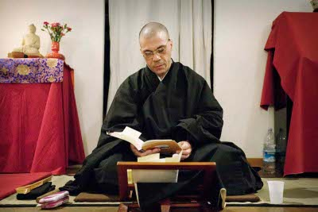

Discorsi di Dharma
Discorsi di Dario Doshin Girolami

- LA VOLPE DI BAIZHANG
- LO ZEN SOTO E I KOAN
- TAGLIARE L'ERBA CHE CRESCE
- ZAZEN, LA VIA DELLA "PRESENZA DI SPIRITO"
- LA QUESTUA: L'INTERDIPENDENZA DELLA CIOTOLA VUOTA
- ZEN E KARATE
- TAI CHI CHUAN, L'ARTE DI MEDITARE IN SOGNO